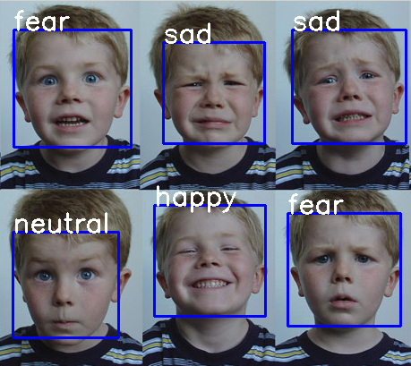
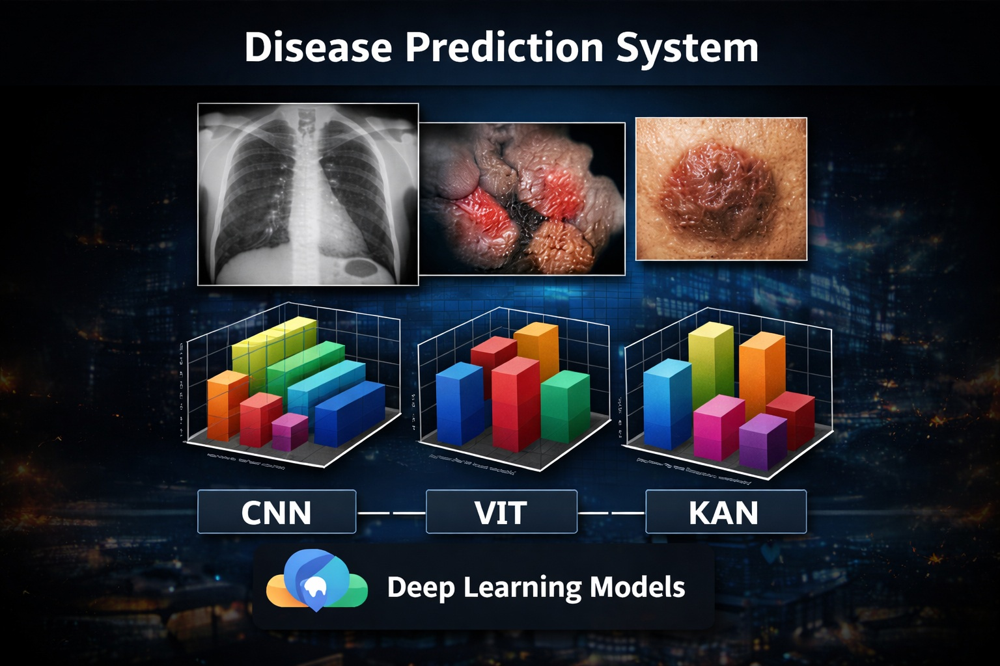
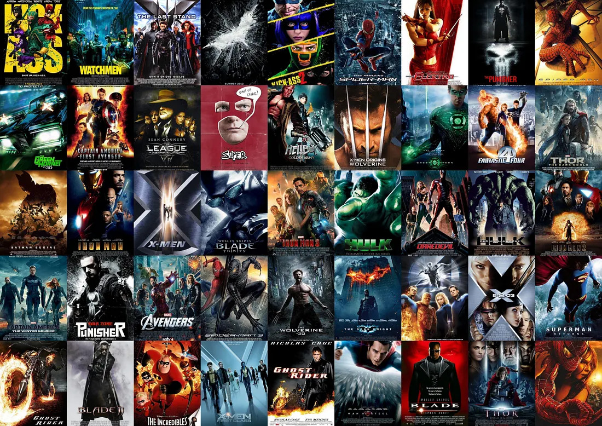

I’m a software developer focused on building real-world applications using Machine Learning, Computer Vision, and efficient system design backed by computer networking principles.
View My Work ResumeI am a Computer Science and Engineering undergraduate with a strong interest in building intelligent systems that solve real-world problems. My curiosity for how things work — from data flow in networks to decision-making in machine learning models — has driven me to explore multiple areas of computer science deeply.
I enjoy working at the intersection of Machine Learning, Computer Vision, and Computer Networking, where both algorithmic thinking and system-level understanding are essential. Through hands-on projects, I have gained experience in designing, training, and evaluating deep learning models, as well as understanding how efficient systems and networks support scalable applications.

Vision Transformer model trained on FER2013 to recognize 72 facial expressions.

Comparative analysis of CNN, ViT, and KAN models for medical image-based diagnosis.

Content-based recommendation engine using NLP and cosine similarity with a Streamlit interface.
Email: prajwaly24@gmail.com